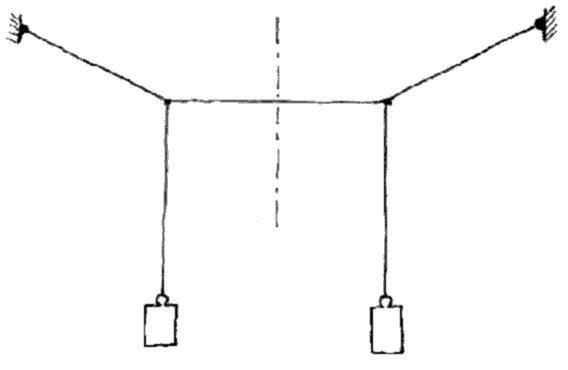

Esta práctica muestra las propiedades de dos sistemas oscilatorios acoplados.
Tiene muchas implicancias en mecánica, en los circuitos eléctricos y en la mecánica cuántica.
1. El experimento
El dispositivo experimental consiste en dos péndulos que cuelgan de una cuerda tensa común. Si hacemos oscilar un péndulo dejando quieto al otro, al rato observamos que el primero se queda quieto y oscila el segundo. La energía se transfiere completamente, de ida y de vuelta.

2. Adquisición de datos
Sitema de la bobina y detección por cero.
(pronto vendrá más información aquí)
3. Medición básica
(pronto vendrá más información aquí)
4. Procesamiento de datos
El sistema de adquisición mide unos piquitos dobles que indican el tiempo en que cada péndulo pasa por la posición de equilibrio. Esos piquitos tienen una amplitud, un ancho y un tiempo central, el del cruce por cero.
Para automatizar la extracción de esos parámetros, hicimos un programa básico de procesamiento de datos
Anda bien!
5. Variaciones del experimento
-
diferentes masas o largos de péndulos
Se puede hacer el cálculo más general, con masas diferentes y largos diferentes en los péndulos. -
configuraciones asimétricas
¿Por qué todo tiene que ser tan simétrico? ¿Qué pasa si no lo es? -
variar el acople
-Cambiando la tensión del hilo horizontal. (¿Se podrá medir?)
-Agregando una masa en el medio. -
agregando grados de libertad
-¿Qué pasa si acoplo el sistema con otro completamente distinto, pero con frecuencias similares?
(vi algo interesante con esto en el Pippard)
-¿Y si agrego un grado de libertad más al problema? -
(su idea aquí)
blip…blip…
Bibliografía
-
Mechanics, A. Sommerfeld. 4ta Ed. (Academic Press, New York, s.f.)
(en Biblioteca. Tiene la teoría general de los modos normales) -
String-coupled pendulum oscilators: Theory and experiment
M.J. Moloney, Am. J. Phys. 46, 1245 (1978)
(calculan las frecuencias para nuestra configuración geométrica de hilos)